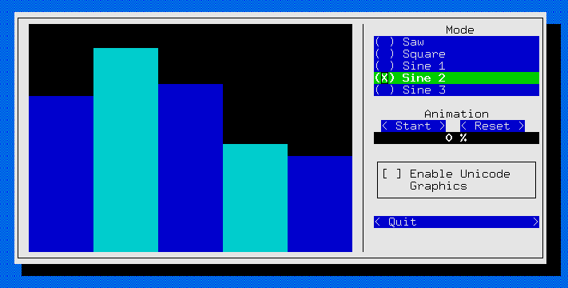

urwid graph
分析graph example工作原理，便于入门
参考文档
graph UI

graph init
GraphModel为图形数据初始化、获取类；
GraphView为界面初始化、控制类，包括UI界面；
* examples/graph.py
* if '__main__'==__name__:
* def main():
* GraphController().main()
* GraphController()
* class GraphController:
* def __init__(self):
* self.model = GraphModel()
* class GraphModel:
* def __init__(self):
* data = [...]
* for m, d in data:
* self.modes.append(m)
* self.data[m] = d
* 数据来源
* self.view = GraphView( self )
* def __init__(self, controller):
* self.controller = controller
* urwid.WidgetWrap.__init__(self, self.main_window())
* def main_window(self):
* self.graph = self.bar_graph()
* self.graph_wrap = urwid.WidgetWrap( self.graph )
* c = self.graph_controls()
* UI界面
* main()
* class GraphController:
* def main(self):
* self.loop = urwid.MainLoop(self.view, self.view.palette)
* self.loop.run()
UI layout
BarGraph参数暂时无法看懂
# examples/graph.py
def bar_graph(self, smooth=False):
satt = None
if smooth:
# smooth attribute
satt = {(1,0): 'bg 1 smooth', (2,0): 'bg 2 smooth'}
w = urwid.BarGraph(['bg background','bg 1','bg 2'], satt=satt)
return w
def graph_controls(self):
# 获取当前支持mode，也就是支持哪些波形
modes = self.controller.get_modes()
# setup mode radio buttons
# 构建波形单选按钮
self.mode_buttons = []
group = []
for m in modes:
rb = self.radio_button( group, m, self.on_mode_button )
self.mode_buttons.append( rb )
# setup animate button
# 构建动画开启、关闭、重置按钮
self.animate_button = self.button( "", self.on_animate_button)
self.on_animate_button( self.animate_button )
self.offset = 0
# 进度条
self.animate_progress = self.progress_bar()
animate_controls = urwid.GridFlow( [
self.animate_button,
self.button("Reset", self.on_reset_button),
], 9, 2, 0, 'center')
# 构建复选框
if urwid.get_encoding_mode() == "utf8":
unicode_checkbox = urwid.CheckBox(
"Enable Unicode Graphics",
on_state_change=self.on_unicode_checkbox)
else:
unicode_checkbox = urwid.Text(
"UTF-8 encoding not detected")
# 不知道为什么要这个wrap
self.animate_progress_wrap = urwid.WidgetWrap(
self.animate_progress)
# 采用list的形式列出layout，并传给ListBox
l = [ urwid.Text("Mode",align="center"),
] + self.mode_buttons + [
urwid.Divider(),
urwid.Text("Animation",align="center"),
animate_controls,
self.animate_progress_wrap,
urwid.Divider(),
urwid.LineBox( unicode_checkbox ),
urwid.Divider(),
self.button("Quit", self.exit_program ),
]
w = urwid.ListBox(urwid.SimpleListWalker(l))
return w
def main_window(self):
self.graph = self.bar_graph()
self.graph_wrap = urwid.WidgetWrap( self.graph )
# 竖线
vline = urwid.AttrWrap( urwid.SolidFill(u'\u2502'), 'line')
# 获取控制面板layout
c = self.graph_controls()
# 水平布局，三列，
# ('weight',2,self.graph_wrap): 采用2:1(这里的1表示和剩下的界面)权重分配当前的列数
# ('fixed',1,vline): 固定1个字符的列，使用vline填充
# dividechars=1: 列之间1个字符
# focus_column=2: 聚焦到第3列，从0开始计算
w = urwid.Columns([('weight',2,self.graph_wrap),
('fixed',1,vline), c],
dividechars=1, focus_column=2)
# 左右边框padding设置
w = urwid.Padding(w,('fixed left',1),('fixed right',0))
# 使用body名字的前景色、背景色，绘制LineBox
w = urwid.AttrWrap(w,'body')
w = urwid.LineBox(w)
# 使用line名字的前景色、背景色，绘制阴影效果
w = urwid.AttrWrap(w,'line')
w = self.main_shadow(w)
return